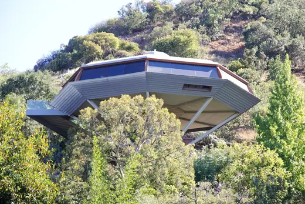
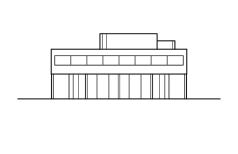

Buildings 332
Sort
 Rietveld Schröder House1924 · Utrecht
Rietveld Schröder House1924 · Utrecht Gropius House1938 · Lincoln
Gropius House1938 · Lincoln Eames House1949 · Los Angeles
Eames House1949 · Los Angeles Vanna Venturi House1964 · Philadelphia
Vanna Venturi House1964 · Philadelphia Hill House1904 · Helensburgh
Hill House1904 · Helensburgh Horta House1901 · Brussels
Horta House1901 · Brussels Hôtel Tassel1894 · Brussels
Hôtel Tassel1894 · Brussels
Chemosphere (Malin Residence)1960 · Los Angeles Maison Louis Carré1959 · Bazoches-sur-Guyonne
Maison Louis Carré1959 · Bazoches-sur-Guyonne Katsura Imperial Villa17th c. · Kyoto
Katsura Imperial Villa17th c. · Kyoto Villa Tugendhat1930 · Brno
Villa Tugendhat1930 · Brno Glass House1949 · New Canaan
Glass House1949 · New Canaan Casa Luis Barragán1948 · Mexico City
Casa Luis Barragán1948 · Mexico City Hollyhock House1921 · Los Angeles
Hollyhock House1921 · Los Angeles Milam Residence1961 · Ponte Vedra Beach
Milam Residence1961 · Ponte Vedra Beach Palau Güell1888 · Barcelona
Palau Güell1888 · Barcelona Curutchet House1953 · La Plata
Curutchet House1953 · La Plata Rose Seidler House1950 · Wahroonga
Rose Seidler House1950 · Wahroonga Sheats-Goldstein Residence1963 · Los Angeles
Sheats-Goldstein Residence1963 · Los Angeles Taliesin1911 · Spring Green
Taliesin1911 · Spring Green Fallingwater1939 · Mill Run
Fallingwater1939 · Mill Run Melnikov House1929 · Moscow
Melnikov House1929 · Moscow Schindler House1922 · West Hollywood
Schindler House1922 · West Hollywood Stoclet Palace1911 · Brussels
Stoclet Palace1911 · Brussels Darwin D. Martin House1905 · Buffalo
Darwin D. Martin House1905 · Buffalo Miller House and Garden1957 · Columbus
Miller House and Garden1957 · Columbus Gehry Residence1978 · Santa Monica
Gehry Residence1978 · Santa Monica Muuratsalo Experimental House1953 · Jyväskylä
Muuratsalo Experimental House1953 · Jyväskylä 2 Willow Road1939 · London
2 Willow Road1939 · London Kaufmann Desert House1946 · Palm Springs
Kaufmann Desert House1946 · Palm Springs Autrique House1893 · Brussels
Autrique House1893 · Brussels Farnsworth House1951 · Plano
Farnsworth House1951 · Plano Robie House1910 · Chicago
Robie House1910 · Chicago El Capricho1885 · Comillas
El Capricho1885 · Comillas Villa Mairea1939 · Noormarkku
Villa Mairea1939 · Noormarkku Taliesin West1937 · Scottsdale
Taliesin West1937 · Scottsdale Lovell Health House1929 · Los Angeles
Lovell Health House1929 · Los Angeles
Villa Savoye1931 · Poissy Rockefeller Guest House1950 · New York
Rockefeller Guest House1950 · New York Hôtel van Eetvelde1898 · Brussels
Hôtel van Eetvelde1898 · Brussels Lemke House1933 · Berlin
Lemke House1933 · Berlin Casa Vicens1885 · Barcelona
Casa Vicens1885 · Barcelona House for an Art Lover1996 · Glasgow
House for an Art Lover1996 · Glasgow Herbert and Katherine Jacobs First House1937 · Madison
Herbert and Katherine Jacobs First House1937 · Madison